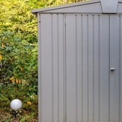
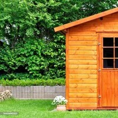

Metal
Metal storage sheds offer several advantages that make them a popular choice for homeowners and businesses:
- Durability: Metal sheds are known for their longevity. They can withstand harsh weather conditions such as heavy rain, snow, and strong winds. Unlike wood, they are not prone to rotting, warping, or insect damage.
- Low Maintenance: Metal sheds require minimal maintenance compared to their wooden counterparts. They don't need to be painted or treated regularly, and they are not susceptible to issues like termites or mold.
- Security: Metal sheds are sturdy and provide a higher level of security compared to plastic or fabric storage solutions. They are harder to break into, providing a secure space for valuable items.
- Fire Resistance: Metal is non-combustible, which means it's less likely to catch fire in the event of a nearby fire or other accidents.
Vinyl/Plastic
Vinyl storage sheds offer several advantages that make them a popular choice for homeowners and businesses:
- Low Maintenance: Vinyl sheds are virtually maintenance-free. They don't require painting, staining, or sealing like wooden sheds. They are resistant to rot, rust, and pests, making them a hassle-free storage solution.
- Durable and Long-Lasting: Vinyl is a strong and durable material that can withstand various weather conditions, including rain, snow, and strong winds. It won't warp, crack, or fade over time.
- Resistant to Termites and Insects: Unlike wood, vinyl is not susceptible to termite infestations or damage from other pests. This makes it an excellent choice for areas where pests are a concern.
Wood
Wood storage sheds offer several advantages that make them a popular choice for many homeowners:
- Sturdiness and Durability: When properly constructed and maintained, wood sheds can be highly durable. They are able to withstand various weather conditions, including rain, snow, and wind.
- Insulation and Temperature Regulation: Wood has natural insulating properties, which can help regulate the temperature inside the shed. This makes it a more comfortable environment for working or spending time in during different seasons.
- Repairability: In the event of damage, wood can be repaired or replaced more easily compared to materials like metal or vinyl. This can extend the lifespan of the shed.
Company Description
StoreMeUp is a retail company that sells various brands with high quality storage sheds. It comes with different sizes enough to declutter your backyards and to have a place for your tools and equipment to be stored in one place.
- Type of Company
- StoreMeUp is a retail company selling different brands of storage sheds. Most of our products are made of wood, plastic, and steel that can withstand different weather conditions.
- Product of Company
- StoreMeUp is a retail company selling different brands of storage sheds.
- Product
- Storage Sheds (Material-Based Storage Sheds: Metal, Vinyl (Plastic), and Wood)